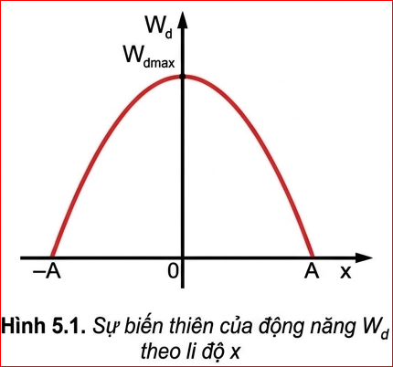
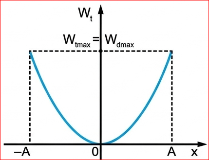
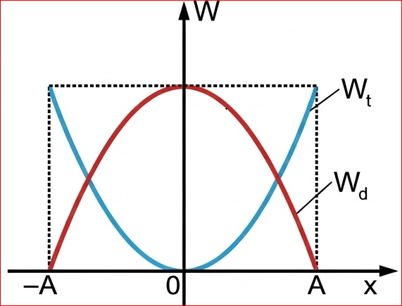
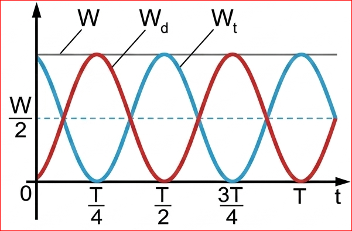
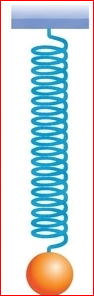
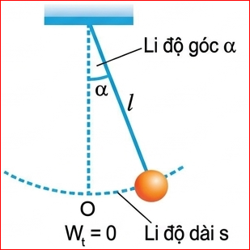
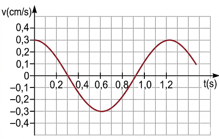

CHƯƠNG 1 - DAO ĐỘNG ĐIỀU HOÀ
Động năng của vật dao động điều hoà được xác định bởi biểu thức:
Thay \( v=-\omega A\sin(\omega t+\varphi) \) vào, ta được:
\( W_{đ}=\frac{1}{2}m\omega^{2}A^{2}\sin^{2}(\omega t+\varphi) \)
\( W_{đ}=\frac{1}{2}m\omega^{2}A^{2}[1-\cos^{2}(\omega t+\varphi)] \)
Thay \( x=A\cos(\omega t+\varphi) \) vào ta được:
Công thức (5.1) cho biết sự biến thiên của động năng theo li độ x.

Hình 5.1 là đồ thị chỉ sự biến thiên của động năng theo li độ x. Đó là một đường parabol có bề lõm hướng xuống và có giá trị cực đại: \( W_{đmax}=\frac{1}{2}m\omega^{2}A^{2} \).
Đồ thị cho thấy, khi vật đi từ vị trí cân bằng tới vị trí biên thì động năng của vật đang từ cực đại giảm đến 0.
Khi vật đi từ vị trí biên về vị trí cân bằng thì động năng của vật tăng từ 0 đến giá trị cực đại.
Theo định luật bảo toàn năng lượng, nếu bỏ qua ma sát thì động năng của vật không mất đi mà chuyển dần thành thế năng của vật và ngược lại. Vì thế ta có thể viết:
\( W_{t}=\frac{1}{2}W_{đmax}-W_{đ(x)} \)
\( =\frac{1}{2}m\omega^{2}A^{2}-[\frac{1}{2}m\omega^{2}A^{2}-\frac{1}{2}m\omega^{2}x^{2}] \)
Công thức (5.2) cho biết sự biến thiên của thế năng theo li độ.

Đồ thị biến thiên của thế năng theo li độ x cũng là một đường parabol nhưng bề lõm hướng lên như Hình 5.2 và có giá trị cực đại: \( W_{tmax}=W_{đmax}=\frac{1}{2}m\omega^{2}A^{2} \).
Trong dao động điều hoà, có sự chuyển hoá qua lại giữa động năng và thế năng của vật, còn cơ năng, tức tổng động năng và thế năng thì được bảo toàn.

1. Hình 5.3 là đồ thị động năng và thế năng của một vật dao động điều hoà theo li độ. Hãy phân tích sự chuyển hoá giữa động năng và thế năng bằng đồ thị.
Lời giải:

2. Hình 5.4 là đồ thị động năng và thế năng của một vật dao động điều hoà theo thời gian.
a) Động năng và thế năng của vật thay đổi như thế nào trong các khoảng thời gian: từ 0 đến \( \frac{T}{4} \), từ \( \frac{T}{4} \) đến \( \frac{T}{2} \), từ \( \frac{T}{2} \) đến \( \frac{3T}{4} \), từ \( \frac{3T}{4} \) đến T.
b) Tại các thời điểm: \( t=0; t=\frac{T}{8}; t=\frac{T}{4}; t=\frac{3T}{8} \) động năng và thế năng của vật có giá trị như thế nào (tính theo W). Nghiệm lại để thấy ở mỗi thời điểm đó \( W_{đ}+W_{t}=W \).
Lời giải:
Câu a:
Câu b:
Ta biết nếu bỏ qua ma sát thì dao động của con lắc lò xo là dao động điều hoà. Thế năng của con lắc lò xo là thế năng đàn hồi của lò xo khi bị biến dạng.
Người ta đã chứng minh được rằng, nếu chọn mốc thế năng ở vị trí cân bằng thì thế năng của con lắc lò xo khi vật ở li độ x là:
với \( k \) là độ cứng của lò xo.
So sánh (5.4) với (5.2) ta suy ra \( \omega=\sqrt{\frac{k}{m}} \) và chu kì của con lắc lò xo là:

Cơ năng của con lắc lò xo là:
\( W=W_{đ}+W_{t}=\frac{1}{2}mv^{2}+\frac{1}{2}kx^{2} \)
\( W=\frac{1}{2}m\omega^{2}A^{2}\sin^{2}(\omega t+\varphi)+\frac{1}{2}m\omega^{2}A^{2}\cos^{2}(\omega t+\varphi) \)
\( =\frac{1}{2}m\omega^{2}A^{2}[\sin^{2}(\omega t+\varphi)+\cos^{2}(\omega t+\varphi)] \)
Một con lắc lò xo có độ cứng k và vật nặng có khối lượng m.
1. Tính chu kì T.
2. Đo chu kì T bằng đồng hồ. So sánh hai kết quả thu được với kết quả tính ở Câu 1.
Hướng dẫn:
Vị trí của con lắc đơn được xác định bằng li độ dài s hay li độ góc \( \alpha \) (Hình 5.6).

Thế năng của con lắc đơn là thế năng trọng trường. Chọn mốc thế năng ở vị trí cân bằng thì thế năng của con lắc ở li độ góc \( \alpha \) là :
Ta có: \( (1-\cos\alpha)=2\sin^{2}\frac{\alpha}{2} \)
Với \( \alpha \) nhỏ: \( \sin\frac{\alpha}{2}\approx\frac{\alpha}{2} \) (\( \alpha \) tính theo rad)
Khi đó \( W_{t}=mgl\frac{\alpha^{2}}{2} \) , với \( \alpha=\frac{s}{l} \)
Tại vị trí biên, li độ dài s của con lắc cực đại bằng A. Khi đó, động năng của con lắc bằng 0, do đó thế năng của con lắc bằng cơ năng.
Biểu thức (5.8) được viết: \( W_{t}=\frac{1}{2}m\omega^{2}A^{2}\cos^{2}(\omega t+\varphi) \)
Động năng của con lắc ở li độ góc \( \alpha \) là động năng của vật m:
Tương tự với con lắc lò xo ta có: \( W=\frac{1}{2}m\omega^{2}A^{2}=\text{hằng số}. \)
Làm thí nghiệm để xác nhận rằng khi góc lệch \( \alpha_{0}\le10^{\circ} \) thì chu kì của con lắc đơn gần như không phụ thuộc vào biên độ dao động.
Hướng dẫn:
Chuẩn bị một con lắc đơn chiều dài \( l \) cố định. Lần lượt kéo vật ra các góc nhỏ khác nhau (ví dụ 3 độ, 6 độ, 9 độ) rồi buông nhẹ. Dùng đồng hồ đo thời gian của 10 dao động cho mỗi lần. Tính chu kì T. Kết quả thu được sẽ thấy T gần như bằng nhau trong cả 3 trường hợp, chứng minh khi \( \alpha_0 \le 10^{\circ} \) chu kì không phụ thuộc biên độ.
1. Một con lắc lò xo có vật nặng khối lượng 0,4 kg, dao động điều hoà. Đồ thị vận tốc v theo thời gian t như Hình 5.7.

Tính:
a) Vận tốc cực đại của vật;
b) Động năng cực đại của vật;
c) Thế năng cực đại của con lắc;
d) Độ cứng k của lò xo.
Lời giải: (Dựa trên dữ kiện đọc từ đồ thị Hình 5.7 trong sách)
a) Từ đồ thị, vận tốc cực đại \( v_{max} = 0,3 \text{ cm/s} = 0,003 \text{ m/s} \).
b) Động năng cực đại: \( W_{đmax} = \frac{1}{2}m v_{max}^2 = \frac{1}{2} \cdot 0,4 \cdot (0,003)^2 = 1,8 \cdot 10^{-6} \text{ J} \).
c) Thế năng cực đại = Cơ năng = Động năng cực đại \( \Rightarrow W_{tmax} = 1,8 \cdot 10^{-6} \text{ J} \).
d) Từ đồ thị, chu kì \( T = 1,2 \text{ s} \). Ta có \( T = 2\pi\sqrt{\frac{m}{k}} \Rightarrow k = \frac{4\pi^2 m}{T^2} \approx \frac{4 \cdot 10 \cdot 0,4}{1,2^2} \approx 11,1 \text{ N/m} \).
2. Một con lắc lò xo gồm lò xo có độ cứng \( k=100\text{ N/m} \), vật nặng có khối lượng \( m=200\text{ g} \), dao động điều hoà với biên độ \( A=5\text{ cm} \).
a) Xác định li độ của vật tại thời điểm động năng của vật bằng 3 lần thế năng của con lắc.
b) Xác định tốc độ của vật khi vật qua vị trí cân bằng.
c) Xác định thế năng của con lắc khi vật có li độ \( x=-2,5\text{ cm} \).
Lời giải: Đổi \( m = 0,2 \text{ kg}, A = 0,05 \text{ m} \).
a) Ta có \( W = W_đ + W_t \). Vì \( W_đ = 3W_t \Rightarrow W = 4W_t \Rightarrow \frac{1}{2}kA^2 = 4 \cdot \frac{1}{2}kx^2 \Rightarrow x^2 = \frac{A^2}{4} \Rightarrow x = \pm\frac{A}{2} = \pm 2,5 \text{ cm} \).
b) Tại VTCB (\( x=0 \)), tốc độ đạt cực đại \( v_{max} = \omega A \).
Tần số góc \( \omega = \sqrt{\frac{k}{m}} = \sqrt{\frac{100}{0,2}} = \sqrt{500} = 10\sqrt{5} \text{ rad/s} \).
\( \Rightarrow v_{max} = 10\sqrt{5} \cdot 5 = 50\sqrt{5} \text{ cm/s} \approx 111,8 \text{ cm/s} \).
c) Thế năng tại \( x = -2,5 \text{ cm} = -0,025 \text{ m} \):
\( W_t = \frac{1}{2}kx^2 = \frac{1}{2} \cdot 100 \cdot (-0,025)^2 = 0,03125 \text{ J} \).
Một vật có khối lượng m dao động điều hoà với tần số góc \( \omega \) và biên độ A. Tại li độ x:
Phân tích sự chuyển hoá giữa động năng và thế năng trong dao động điều hoà ở một số ví dụ trong đời sống.
(Gợi ý: Trò chơi xích đu, nhíp xe ô tô, đồng hồ quả lắc...)
Câu 1: Trong dao động điều hoà của con lắc lò xo, nếu bỏ qua ma sát thì đại lượng nào sau đây được bảo toàn?
Câu 2: Công thức tính thế năng của con lắc lò xo ở li độ \( x \) là:
Câu 3: Khi vật dao động điều hoà đi qua vị trí cân bằng thì:
Câu 4: Tần số góc của con lắc đơn chiều dài \( l \), dao động tại nơi có gia tốc trọng trường \( g \) là:
Câu 5: Tại vị trí li độ \( x = \frac{A}{\sqrt{2}} \), tỉ số giữa động năng và thế năng (\( W_đ / W_t \)) là bao nhiêu?
Bài 1:
Một con lắc lò xo có độ cứng \( k = 40 \text{ N/m} \) dao động điều hoà với biên độ \( A = 4 \text{ cm} \). Tính cơ năng của con lắc.
Đổi: \( A = 4 \text{ cm} = 0,04 \text{ m} \).
Cơ năng của con lắc: \( W = \frac{1}{2}kA^2 = \frac{1}{2} \cdot 40 \cdot (0,04)^2 = 0,032 \text{ J} \).
Bài 2:
Con lắc lò xo dao động với biên độ A. Tại vị trí nào (tính theo A) thì động năng bằng thế năng?
Theo đề: \( W_đ = W_t \).
Mà cơ năng \( W = W_đ + W_t \Rightarrow W = 2W_t \).
\( \Leftrightarrow \frac{1}{2}kA^2 = 2 \cdot \frac{1}{2}kx^2 \Rightarrow A^2 = 2x^2 \)
\( \Rightarrow x = \pm\frac{A}{\sqrt{2}} \) (hay \( \pm\frac{A\sqrt{2}}{2} \)).
Bài 3:
Một con lắc đơn có chiều dài \( l = 1 \text{ m} \) dao động tại nơi có \( g = 10 \text{ m/s}^2 \) với biên độ góc \( \alpha_0 = 0,1 \text{ rad} \). Tính tốc độ cực đại của vật nhỏ.
Tần số góc: \( \omega = \sqrt{\frac{g}{l}} = \sqrt{\frac{10}{1}} = \sqrt{10} \text{ rad/s} \).
Biên độ dài: \( S_0 = l \cdot \alpha_0 = 1 \cdot 0,1 = 0,1 \text{ m} \).
Tốc độ cực đại đạt được khi qua VTCB: \( v_{max} = \omega S_0 = \sqrt{10} \cdot 0,1 \approx 0,316 \text{ m/s} \).